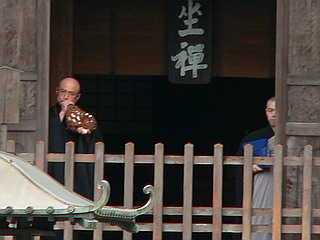

大雄山最乗寺は曹洞宗屈指の名刹である。
小田原から大雄山までの大雄山線はここの参拝のために敷かれたという事からも、その信仰の篤さを想像できよう。
大雄山といえば修験道。
周囲はまるで天狗が飛び交っているかのような凛とした山深い森。
うっそうとした参道から門をくぐれば、パッと視界が開け、禅寺らしく回廊に囲まれた別世界。
まるで周辺の森から結界を張っているかのようだ。

本堂、開山堂、座禅堂、庫裏、書院などが回廊によって繋がっている。
一画には資料館のようなところもあり、この寺の歴史の深さを物語っている。
と、突然
ぶううぉおおおおお〜〜〜〜

祈祷の時間を知らせるものだろうか、法螺貝が鳴り響いた。
何とも身の引き締まる思いである。
回廊で囲われた一角をすぎると橋が架かっている。
その先の結界門をすぎると天狗になって飛び去ったといわれる修験者、道了の浄域とされる緑深いエリアになる。
門の左右には天狗サマが。
それまで禅寺らしく張り詰めた人工的な緊張感があったのだが、門を過ぎると再び鬱蒼とした雰囲気になる。
天狗の住む場所、ということになるのだろう。
三面大黒天が祀られる三面殿の前には何故か小槌が奉納されていた。
階段を上っていくと正面には御真殿。
御真殿の中にも凄い形相の天狗さんがいた。
堂内は撮影禁止だったので外から撮らせてもらいましたよ。
さて。
ここからが本題です。
御真殿の脇に大量の下駄が並んでいるのだ。
サイズは大小様々。
これは天狗の下駄、という意味合いで見た限りでは比較的近年、少なくともここ数十年以内に興った習俗かと。
山の緑をバックに赤い下駄がびっしりと並ぶ様は壮観！というしかない眺めである。
天狗の下駄、といえば一本歯の高下駄、というのが通り相場だが、まあ、それではコケちゃうのでほとんどが二本歯の高下駄だった。
足の神さまとして草履を奉納するところは日本全国各地にあれど、このように天狗の下駄としての履物奉納は初めて見た。
こんなにたくさんの天狗さんがいらっしゃるのだろうか？
材質はほぼ100パーセント金属製。
いわゆる鉄下駄ですな。さすが天狗さん、日頃から法力アップのために鍛錬をされているようで…
中にはパンチングメタルや蚊取り線香の台座みたいなアルミ製のものまである。
しかも一足一足が違う大きさ。
同じような大きさの下駄でも良く見ると鼻緒の作り方や歯の高さなどが皆ビミョ〜に違うのだ。
これはつまり奉納用の下駄が大量生産で作られているのではなく、奉納者がそれぞれ独自に鍛冶屋さんに作ってもらっている、という事になる。
コレだけの数があるのにも関わらず、同じ規格でフォーマットされたモノが見当たらない奉納物群というのは、何でもフォーマットしたがる現代社会においてかなり貴重のではなかろうか。
その意味でもここ、大雄山の下駄奉納は最近の習俗なれど侮れない真剣味がにじみ出ている印象を持った。
この下駄奉納、左右一対で一組、というところから夫婦和合に御利益があるという。
ハードなビジュアルだけに肉体改造とか脚力アップといった体育会系の祈願かと思いきや、意外とソフトな願いが込められているんですね…
扇型や丸型といった、変型のモノもある。
この辺のオリジナル魂を堪能出来るのが非フォーマット奉納物ウォッチの醍醐味ですな。
でも、天狗サマに奉納する訳だから、履く人（あ、天狗か…）の身になって考えようじゃあないか。歩き難いよ！
とてつもなく巨大な下駄があった。
目方千貫というから三社祭の神輿みたいなモンですか。
…ひょっとしてこの山中には身長30メートル位の天狗さんが飛び回っているのではなかろうか…
恐ろしいが、それはそれで私的には大歓迎だぞ！
巨大下駄の手前にはミクロマンが履くような小さな下駄がポツンと置いてあった。
巨大高下駄の歯の隙間から見た下駄の群れ。
ヘヴィーメタルな下駄が並んでいる。
この先も下駄は増えていくのだろうか？
どさくさに紛れて斧まで奉納されている。
土地柄、金太郎のマサカリってことか？だったら奉納する場所、間違ってますよ〜。
コンクリ製の天狗の面。鼻が取れて高射砲みたいになっちゃってました。
で、下駄奉納エリアを過ぎると激しすぎる階段。
上っていくと奥の院へと続く。
奥の院では大勢の人が山伏さんと一緒にお堂にこもって祈祷のようなことをしていた。
あ、これは奉納されてるんじゃなくてお堂に上がっている山伏さん達の下駄です…鉄じゃないんだ…
そんなこんなで境内をぐるっと一回りした按配。
帰りは山中をのんびりと歩きながら下っていく。
…と、途中にやけに目出度そうなカラーリングの建物が見えてきた。
この寺の開祖了庵の妹、慧春尼を祀る慧春尼堂である。
中央には慧春尼像。
赤と白のタスキでグルグル巻きにされて、しばられ地蔵みたいになっちゃってる。
梁にも願い事の書かれた紅白のタスキが縛り放題縛ってあって、もう、大変。
東北の篭り堂などを連想させる濃ゆい空間だが壁がないので陰にこもった感じはない。
でもやっぱ濃いなあ〜。
最後まで油断できない寺であった。
2007.6.